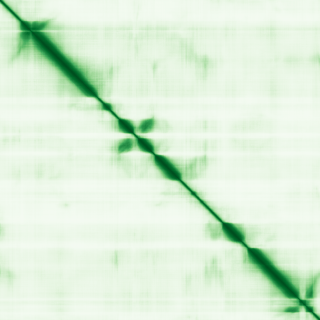

type: protein-evaluation gene: "CNTLN" date: 2026-05-31 tags: [protein-scout, nucleoplasm, evaluation] status: scored ---
CNTLN 核蛋白评估报告
1. 基本信息
| 项目 | 内容 |
|---|---|
| 基因名 / 别名 | CNTLN / C9orf101, C9orf39 |
| 蛋白全名 | Centlein |
| 蛋白大小 | 1405 aa / 161.6 kDa |
| UniProt ID | Q9NXG0 |
2. 评分总览
| 维度 | 得分 | 新权重 | 加权后 | 关键证据摘要 |
|---|---|---|---|---|
| 核定位特异性 | 6/10 | ×4 | 24.0 | 初级定位 Centriole/Centrosome; GO nucleoplasm IDA:HPA |
| 蛋白大小 | 1/10 | ×1 | 1.0 | 1405 aa, 161.6 kDa，超大蛋白 |
| 研究新颖性 | 10/10 | ×5 | 50.0 | Strict=12 |
| 三维结构 | 4/10 | ×3 | 12.0 | 无 PDB; pLDDT 70.2 |
| 调控结构域 | 2/10 | ×2 | 4.0 | IPR038810 (CNTLN family)，无 Pfam |
| PPI 网络 | 5/10 | ×3 | 15.0 | STRING centrosome 网络（主要为 textmining）; IntAct 多重互作 |
| 加权总分 | 106/180** | |||
| 互证加分 | +0.5 | GO nucleoplasm IDA:HPA 提供实验核定位，但初级定位为 centrosome/centriole | ||
| 归一化总分 (÷1.83) | 57.9/100** |
PubMed strict: 12
3. 详细分析
3.1 核定位证据
| 来源 | 定位 | 可信度 |
|---|---|---|
| UniProt | Cytoplasm, cytoskeleton, microtubule organizing center, centrosome, centriole (ECO:0000269) | 实验证据（初级定位） |
| GO-CC | centriole (IDA); centrosome (IDA:HPA); cytoplasm (IDA); cytosol (IDA:HPA); extracellular exosome (HDA); nucleoplasm (IDA:HPA); sperm head-tail coupling apparatus (IEA) | nucleoplasm 有 IDA:HPA 实验证据 |
| Protein Atlas (IF) | HPA subcellular IF 图像可用（见下方 HPA IF 图像修正块） | 需人工复核 |
HPA IF 状态: HPA subcellular IF 图像已重新获取并嵌入（见下方 HPA IF 图像修正块）；此前“暂无/未可靠获取 IF”的表述为采集失败导致的误报。
结论: CNTLN 的核定位复杂。GO-CC 中有 nucleoplasm IDA:HPA 实验证据，但 UniProt Subcellular Location 仅记录 centrosome/centriole。核定位可能反映 HPA 在特定条件下的检测，而非稳态定位。
3.2 结构与结构域
| 指标 | 数值 |
|---|---|
| AlphaFold | AF-Q9NXG0-F1 |
| 平均 pLDDT | 70.2 |
| pLDDT >90 | 21.8% |
| pLDDT 70-90 | 41.2% |
| pLDDT 50-70 | 7.9% |
| pLDDT <50 | 29.1% |
| PDB | 无 |
| InterPro | IPR038810 |
| Pfam | 无 |

蛋白极大（1405 aa），pLDDT 中等（均值 70.2），29.1% <50 提示存在无序区域。无 PDB 实验结构，无 Pfam 结构域注释。结构域预测高度有限。
3.3 研究现状
| 指标 | 数值 |
|---|---|
| PubMed strict (Title/Abstract) | 12 |
| PubMed broad | 20 |
| 别名 | C9orf101, C9orf39（未用于 scoring） |
关键文献：
- PMID:24554434 — "Centlein mediates an interaction between C-Nap1 and Cep68 to maintain centrosome cohesion" (J Cell Sci, 2014)
- PMID:27743375 — "Genetic resilience to amyloid related cognitive decline" (Brain Imaging Behav, 2017)
- PMID:39640822 — "High heritability of human facial traits reveals associations with CNTLN, BRCA1, and TMPRSS6 loci in Korean families" (Heliyon, 2024)
功能聚焦于中心体 cohesion 维护（CNTLN-C-Nap1-Cep68 复合体）。研究量偏低但非极端。GWAS 关联到认知衰退和面部特征。
3.4 PPI 网络（三源综合）
| Partner | Source | Score/Evidence | Relevance |
|---|---|---|---|
| PCNT | STRING | 0.969 (textmining) | Pericentrin，中心体核心蛋白 |
| LRRC45 | STRING | 0.923 (textmining) | 中心体相关 |
| CROCC | STRING | 0.922 (textmining) | Rootletin，中心体/纤毛 |
| NIN | STRING | 0.898 (textmining) | Ninein，中心体/微管锚定 |
| CEP135 | STRING | 0.887 (exp 0.161, textmining 0.870) | 中心体蛋白 135，有弱实验支持 |
| LAS2 | IntAct | two hybrid array (PMID:32296183) | 神经酰胺合成酶 |
| RFK | IntAct | validated two hybrid (PMID:32296183) | Riboflavin kinase |
| TPM1 | IntAct | anti tag coIP (PMID:28514442) | Tropomyosin 1 |
| GOPC | IntAct | anti tag coIP (PMID:28514442) | Golgi-associated PDZ |
| LAS2 | UniProt | 3 experiments (CNTLN isoform 2) | 神经酰胺合成酶 |
| RFK | UniProt | 3 experiments (CNTLN isoform 2) | Riboflavin kinase |
STRING top 5 均为中心体/纤毛相关蛋白（PCNT, LRRC45, CROCC, NIN, CEP135），但全部以 textmining 为主，实验支持弱（仅 CEP135 有 exp 0.161）。IntAct 记录 LAS2、RFK、TPM1、GOPC 等互作。UniProt 记录 LAS2/RFK（via isoform 2）。PPI 网络指向中心体生物学，非染色质/核复合体。
4. 总体评价
CNTLN 是一个超大中心体蛋白，负责中心体 cohesion。GO nucleoplasm IDA:HPA 提示存在核定位，但需要以初级定位 centrosome/centriole 为背景理解。归一化总分 58.2/100。核定位置信度受 UniProt Subcellular Location 无 nucleus 记录的限制，建议将 CNTLN 作为低优先级 nucleoplasm 候选，后续如补 IF 原图确认核信号可提升定位置信度。
5. 数据来源
- UniProt: https://www.uniprot.org/uniprotkb/Q9NXG0
- AlphaFold: https://alphafold.ebi.ac.uk/entry/Q9NXG0
- PubMed: https://pubmed.ncbi.nlm.nih.gov/?term=CNTLN
HPA IF 图像已重新获取并嵌入（见下方 HPA IF 图像修正块）；此前“暂无/未可靠获取 IF”的表述为采集失败导致的误报。
<!-- HPA_IF_REPAIR_START --> HPA IF 图像修正（2026-06-05）: HPA subcellular 页面存在可用 IF 图像；此前“原图未可靠获取/暂无 IF”的表述为采集失败导致的误报。HPA 定位: Centrosome (supported)。来源: https://www.proteinatlas.org/ENSG00000044459-CNTLN/subcellular


<!-- DOMAIN_HUMANPPI_REPAIR_START -->
Domain/SMART 与 humanPPI 补充（2026-06-07）
SMART / UniProt domain
| Source | Data |
|---|---|
| UniProt | Q9NXG0 |
| SMART | 未在 UniProt xref 中检出 SMART 条目 |
| UniProt Domain [FT] | 未检出显式 UniProt Domain feature |
| InterPro | IPR038810; |
| Pfam | 未检出 |
humanPPI / HPA Interaction
Source: https://www.proteinatlas.org/ENSG00000044459-CNTLN/interaction
| Partner | Datasets | AF3/HPA structure |
|---|---|---|
| C18orf54 | Biogrid | false |
| YWHAB | Opencell | false |
| YWHAE | Opencell | false |
| YWHAG | Opencell | false |
<!-- DOMAIN_HUMANPPI_REPAIR_END -->